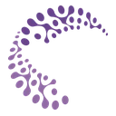

I test whether vision-language models are as reliable as they look.
I’m an undergraduate in Electrical Engineering at IIT Roorkee (B.Tech, expected 2028). My research spans computer vision, generative AI and multimodal learning, with a focus on adversarial machine learning and the security of vision-language models.
Recently I co-authored work showing that the gains of contrastive decoding come from a shift in decoding behaviour rather than from mitigating hallucinations (NeurIPS 2026 Workshop, VLM4RWD). I have also steered unconditional diffusion models with concept vectors for training-free image editing (CVPR 2026 Workshop, GCV), and contributed to work localising hallucination-sensitive attention heads in VLMs with activation patching.
I’m a reviewer for NeurIPS 2026 and a core member of the Data Science Group at IIT Roorkee. Previously I was a Machine Learning Engineer intern at Infigro.ai and a research intern in IIT Roorkee’s Electrical Engineering department, and my team placed 4th at Inter IIT Tech Meet 14.0 with our Adobe Photo Editor.
Off the clock, I enjoy watching movies, exploring new ideas in AI and diving into interesting research papers.
Featured Publications
Papers on why vision-language models hallucinate and how to steer diffusion models.
-

Rethinking the Effectiveness of Contrastive Decoding in Mitigating Hallucinations in MLLMs
On LLaVA-1.5, contrastive decoding is 94% greedy-equivalent; its gains trace to a shift in decoding behaviour, not hallucination mitigation.
NeurIPS 2026 Workshop (VLM4RWD)
-

Guidance for Low-Level Perceptual Editing in Unconditional Diffusion Models
Training-free contrast, saturation and sharpness edits from concept vectors in a DDPM’s U-Net bottleneck.
-

How Many Counterfactuals Does It Take? Probing VLM Hallucinations Through Circuits and Causal Effects
Activation patching and causal influence scores localise the attention heads and MLP layers behind VLM hallucinations.
arXiv preprint, 2026
Latest Updates
Recent papers, roles and results, newest first.
2026
Serving as a reviewer for NeurIPS 2026.
Rethinking the Effectiveness of Contrastive Decoding in Mitigating Hallucinations in MLLMs at the NeurIPS 2026 Workshop (VLM4RWD).
Guidance for Low-Level Perceptual Editing in Unconditional Diffusion Models at the CVPR 2026 Workshop (GCV).
How Many Counterfactuals Does It Take? released as an arXiv preprint.
2025
Placed 4th at Inter IIT Tech Meet 14.0 with our team’s Adobe Photo Editor.
- Aug – Oct 2025
Machine Learning Engineer intern at Infigro.ai.
- Feb 2025
Joined the Data Science Group, IIT Roorkee, as a core member.
Experience & Education
Internships, research, service and my degree, newest first.
-
2026

Reviewer
NeurIPS 2026
-
Aug – Oct 2025
Machine Learning Engineer Intern
Infigro.ai
Built a data-analysis agent that interprets bar charts and trendlines, an LSTM forecasting system for betting trends and user behaviour, and LLM calls that turn chart data and model predictions into written insights.
-
Feb 2025 – now
Core Member
Data Science Group, IIT Roorkee
Mentored students for Build Your Own Project (BYOP) 2026 on project design and implementation, and organised a hands-on technical workshop.
-
Nov – Dec 2024
Research Intern
Electrical Engineering Department, IIT Roorkee
Implemented and tuned PID controllers for a DC motor to study cyber-physical attacks on closed-loop control, and simulated signal-injection and spoofing attacks in MATLAB and Arduino.
-
2024 – 2028
B.Tech in Electrical Engineering
Indian Institute of Technology Roorkee · expected 2028
Selected Projects
Reproducibility studies, research prototypes and things I’ve built.
-
RE-UltraBreak: Universal Jailbreak Attacks on VLMs
A reproducibility study of UltraBreak: universal, cross-model image jailbreaks against black-box VLMs, using randomised image transformations and loss relaxations to maximise transferability.
Jun 2026 – Aug 2026 · Adversarial ML, VLM security
-
VLM Hallucination Mitigation via Self-Verification Decoding
A decoding-time framework that enforces strict textual grounding to reduce visual hallucinations, validated on the POPE and CHAIR benchmarks.
Jun 2025 – Sep 2025 · VLMs, decoding
-
Reproducibility Study: Diffusion Models Beat GANs
Replicated OpenAI’s unconditional U-Net and noise-robust classifier to implement classifier guidance, and validated that scaling classifier gradients trades sample diversity for visual fidelity.
Aug 2025 – Sep 2025 · Diffusion models
-
Adobe Photo Editor
Context-aware background removal, style transfer and typographic editing, with MobileSAM optimised through ONNX Runtime and INT8 quantisation for real-time edge deployment.
4th place · Inter IIT Tech Meet 14.0Nov 2025 – Dec 2025 · Computer vision
-
InVisionDX: CNN-Based Disease Detection
A web app that detects COVID-19, pneumonia, tuberculosis, lung cancer and Alzheimer’s disease from medical images with ResNet and VGG16, at over 95% classification accuracy.
Mar 2025 – Apr 2025 · PyTorch, Flask
-
HireSense
An open-source NLP tool that uses fine-tuned named-entity recognition to parse resumes and match candidates to job descriptions.
Python, NER, NLP
-
ERP API Framework
A backend architecture for ERP management, with data-analysis modules that pull insights from raw ERP datasets.
Python, Flask, JavaScript